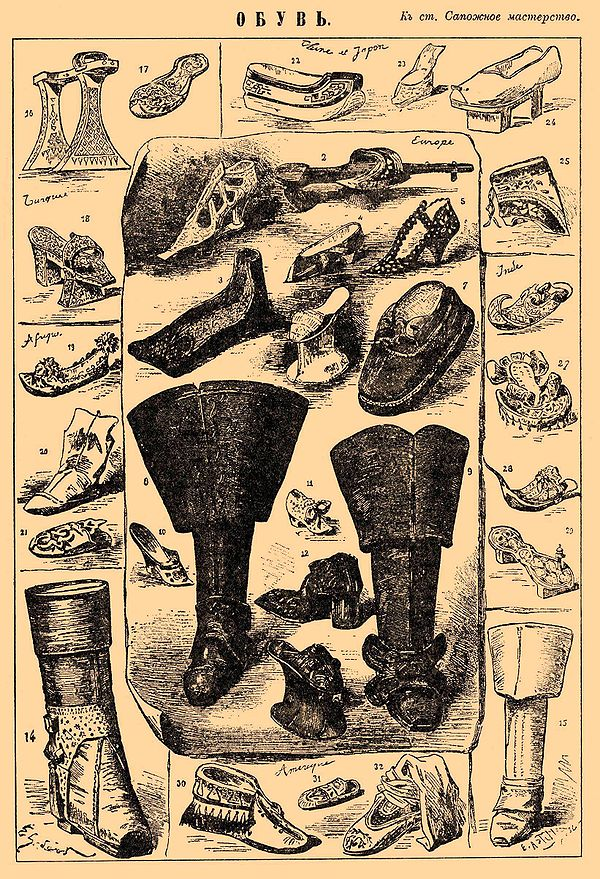
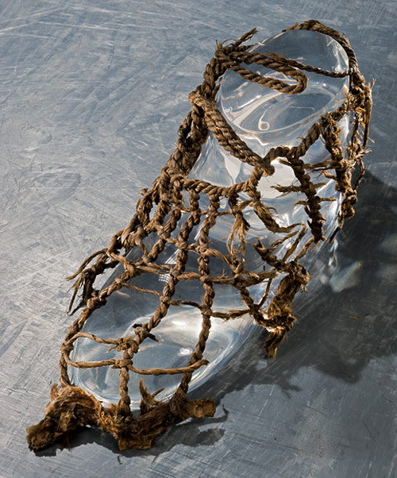
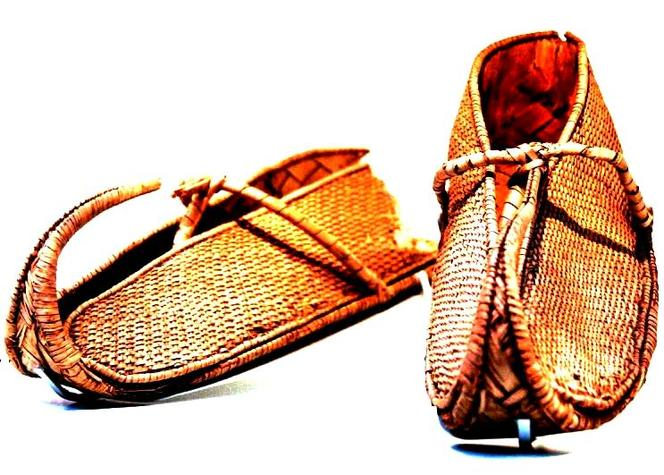
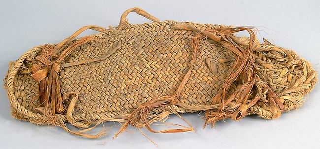
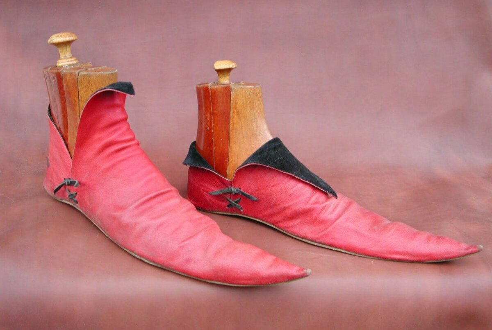
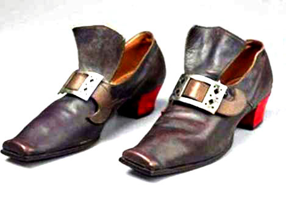
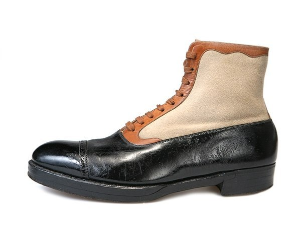

 Иллюстрация из статьи ЭСБЕ «Сапожное мастерство». Коллекция обуви, составленная Жакемаром в музее Клюли в Париже. 1) Башмак из гардероба Екатерины Медичи. Каблук красный, верх из белой кожи, вышитый розовым шёлком. Вспомогательная подошва, соединяющая каблук с носком, тоже красная. 2) Деревянная туфля на ножках, обитых железом. Кожаная перехватка вышита шелком. 3) Мужской немецкий башмак XVI века, из одного куска кожи. 4) Шелковая туфля, вышитая лентами, принадлежавшая принцессе Ламбаль. 5) Дамский башмак фламандского происхождения, времен Людовика XIII, из жёлтого сафьяна с красными украшениями. 6) Женская туфля из белой тиснёной кожи, из Венеции, XVI век. 7) Крестьянский башмак из двойной кожи, времен Людовика XIV. 8) Французский сапог XVI века с вытисненными лилиями. 9) Тяжёлые сапоги времен Людовика XIV, так называемые «котлы». 10) Дамская туфля времен Людовика XV, верх шелковый с бархатными украшениями, каблук белый. 11) Детский башмак той же эпохи: край розовый с серебряным кружевом, бант из розовой ленты. 12) Башмак Генрих I де Монморанси, из чёрной кожи, каблук деревянный, обтянутый красной кожей, украшены лилиями и вензелем владельца. 13) (Объяснение рисунка опущено в подлиннике ЭСБЕ ). 14) Сапог почтальона времен Людовика XV. 15) Ботфорт времен Людовика XIV. 16) Турецкая туфля на ножках, для бани, где горячий пол. Украшена перламутром и обита жестью, перехватка из фиолетовой ткани, вышитой шёлком. 17) Туфля из Константинополя; на красном бархате нашиты вырезанные цветы. 18) Сандалия турецкой дамы; украшена серебряной чеканной работой. 19) Турецкая туфля в виде лодки, из белой кожи, украшения из белого и розового шелка. 20) Дамский сапог из Александрии, верхняя часть из жёлтой кожи вшита в туфлю. 21) Африканская туфля с вышивками серебром и шелком. 22) Китайская туфля, мужская, из фиолетовой шелковой ткани, с обшивкой из чёрного атласа. 23) Женский китайский башмак, шелковый, с бабочкой, вышитой на носке. 24) Башмак мужской на ножках, из Гонконга. Ножки чёрные, верх из красной лакированной кожи. 25) Дамский китайский башмак из чёрного атласа с нашитыми белыми узорами. 26) Индийский башмак, вышитый, загнутый носок красный. 27) Индийский башмак на ножках, подошва спереди выступает в форме эполета, обшит разноцветным атласом и снабжён завязками. 28) Башмак из Пенджаба, вышит серебром. 29) Индийская сандалия, украшена резьбою. 30) Древний военный мокасин из Северной Америки. Из цельного куска кожи, с красной вышивкой. 31) Очень старый детский мокасин; в носке кожа собрана складками. 32) Женский мокасин из жёлтой кожи, вышитой шелками. Верх из голубой бумажной ткани, с ремнями для подкрепления. История появления История обуви начинается примерно с верхнего палеолита. Изучение наиболее раннего периода истории обуви представляет особенный интерес для археологов и антропологов. Древнейшая обувь  История обуви насчитывает не одно тысячелетие. Историк Эрик Тринакус из частного Университета Вашингтона в Сент-Луисе, штат Миссури, США, пришёл к выводу, что обувь появилась 26-30 тыс. лет назад на западе Евразии. Он проанализировал особенности скелета живших там в эпоху среднего и позднего палеолита людей, обращая внимание на мизинец стопы, заметил, что мизинец становился все слабее, а затем начала изменяться и форма стопы. Эта характерная деформация связана с постоянным ношением обуви. Древний Восток  Сведения о том, какую обувь носили в Древнем Египте, более достоверны. Самым распространённым видом обуви были сандалии из пальмовых листьев или папируса, похожие по форме на стремя У ассирийцев, кроме сандалий, снабжённых задником для защиты пятки, были в ходу и высокие башмаки, очень напоминающие современные. Древние евреи делали обувь из кожи, шерсти, тростника и дерева. Известно было три типа обуви — сандалии, башмаки и сапоги, в которых ходили путешественники и солдаты. Античность  В Древней Греции, кроме простых сандалий, умели шить полуботинки с задником, сапожки на шнуровке, подчеркивавшие стройность ног и пользовавшиеся большим спросом у женщин, персикай — сапоги-чулки из мягкой кожи, и эндромиды — сапоги без носка. Но настоящей революцией стало изобретение греками обувной пары, когда правый и левый ботинки шьются по разным лекалам. Средние века  Средневековая Европа отвергла классические сандалии, отдав предпочтение претенциозным туфлям с длинными, загнутыми вверх носами — пулены, которые, по моде того времени, украшались колокольчиками или бубенцами. Французский король Филипп IV даже издал специальный закон, согласно которому вся знать должна была носить только такую обувь. Эпоха Возрождения и Реформации  XV век принёс модникам заметное облегчение: туфли стали короче и шире. С увеличением и расширением передней части пары сужалась и уменьшалась задняя, и уже в 20-х годах XVI века башмаки стали так мелки, что едва держались на ногах и поэтому крепились завязками на подъёме. Обувь изготавливали из кожи, бархата, шелковой и шерстяной ткани красного, голубого, жёлтого и других цветов. Эпоха барокко и классицизма  В конце XVII — начале XVIII веков произошло ещё одно значимое для развития обувного дела событие: юбки дам стали гораздо короче и игривее. Грубые башмаки на толстых каблуках сменили изящные, лёгкие туфельки из бархата, шелка и парчи. И если раньше, когда обувь скрывало длинное платье, высота подошв башмаков была умеренной, то со временем их стали делать выше. Вернуться в начало